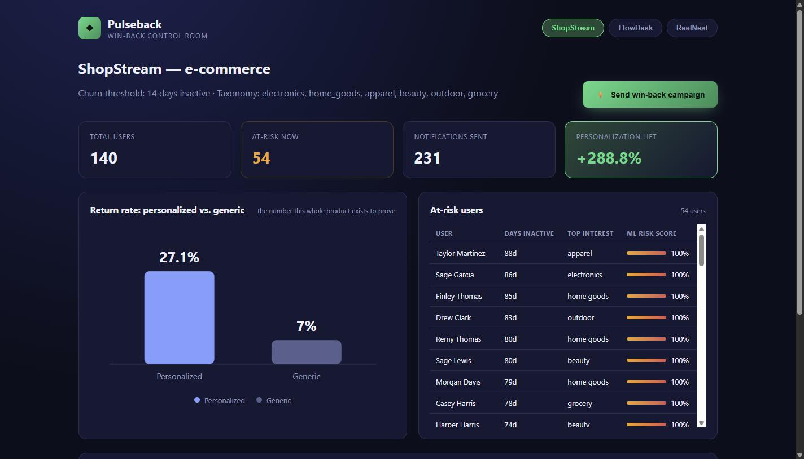
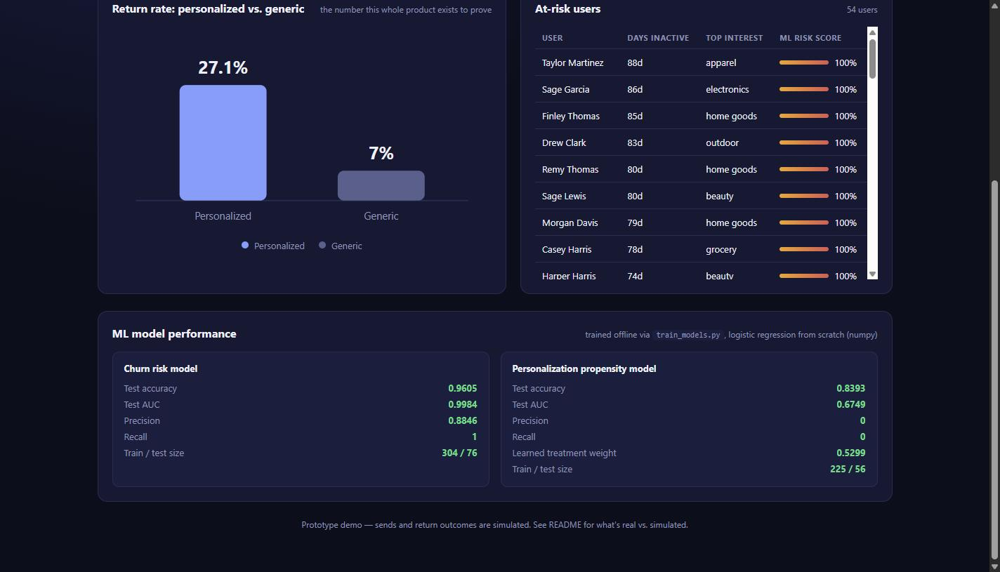
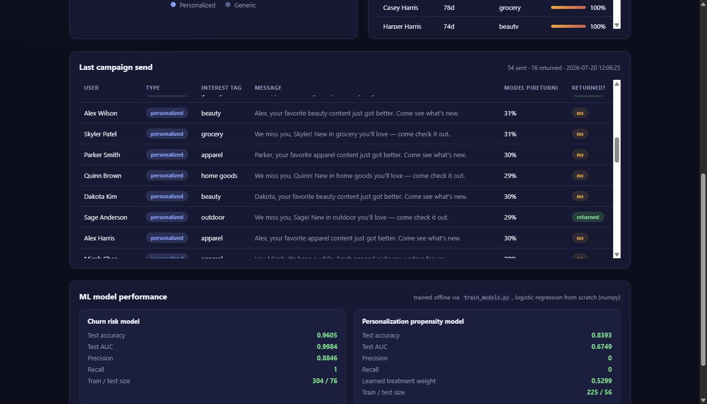
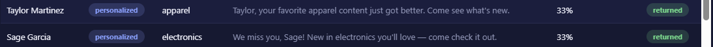

Screenshots of the actual running dashboard, labeled component-by-component, with a walk-through of exactly what happens in the backend when you click "Send win-back campaign." Read alongside the companion document, Code & Model Walkthrough.
1. System Architecture & Workflow
Before the screenshots — this is the full pipeline every user passes through, end to end. It's the same diagram referenced throughout the companion document, included here so this guide stands on its own.
Reading it top to bottom: an event comes in and gets stored, the user's inactivity is checked against the tenant's rule to decide who's eligible (an ML risk score is layered on for ranking), each eligible user's interests are scored, a message is chosen from their top interest, the personalization model decides whether that message should be personalized or generic, it's sent, and the outcome is logged. That outcome then flows back into the data store (left dashed loop) so the metrics stay current, and the dashboard reads live from the data store at any point (right dashed loop) rather than only at the end of the chain.
Rule1. IngestionEvent recorded via POST /api/events
Rule2. EligibilityTenant's own inactivity threshold — churn.py
ML3. Risk scoringTrained churn model — churn_ml.py
Rule4. Interest profileRecency-weighted tag scoring — interests.py
ML5. Uplift scoringTrained propensity model — propensity_model.py
Rule6. Message buildTemplate + top tag — recommender.py
Rule7. Send + logWritten to DB — notifications.py
Rule8. MeasureKPIs + lift % — metrics.py
2. The Main Screen
This is what loads the moment you open http://localhost:8000/. Every labeled element below is explained in the legend underneath.

A
B
C
D
E
F
G
A
Brand mark — "Pulseback"Static branding. No backend calls happen here.
B
Tenant switcher (ShopStream / FlowDesk / ReelNest)Clicking a pill calls GET /api/tenants/<id>/metrics and /at-risk for that specific company and re-renders everything below. This is what makes the platform multi-tenant — the same dashboard, pointed at a different client's data.
C
Tenant header — name, churn threshold, taxonomyPulled straight from the tenants table. "14 days inactive" is this specific client's own definition, not a global rule.
D
"Send win-back campaign" buttonThe main action. See section 4 below for exactly what fires when you click this.
E
KPI cards — Total users / At-risk now / Notifications sent / Personalization liftFour numbers computed live by metrics.py from the database. "Personalization lift" is the one number the whole product is built to prove.
F
Return-rate chart (personalized vs. generic)A hand-drawn SVG bar chart (no charting library) rendered from the same two numbers as the lift KPI. This is the visual version of the business case.
G
At-risk users table, with ML risk score barsEvery row is a user who's crossed this tenant's inactivity threshold. The colored bar and % is the trained churn model's live prediction for that specific user — not the same thing as the rule that got them onto this list in the first place. See Doc 1, section 3.
3. ML Model Performance Panel
Scroll to the bottom of the page. This panel is the "receipts" — proof the numbers above come from real trained models, not made-up constants.

H
I
H
Churn risk model cardTest accuracy 0.96, AUC 0.998, measured on 76 users the model never saw during training. This is the model behind the risk-score bars in section 1.
I
Personalization propensity model cardTest accuracy 0.84, AUC 0.67, "learned treatment weight" +0.53 — the model discovered on its own that personalizing helps. This is the model deciding personalized-vs-generic for every send.
These numbers were written to disk the last time train_models.py ran. They don't change when you reload the page — they're a report card from training, not a live computation.
4. What Happens When You Click "Send Win-Back Campaign"
This screenshot was taken immediately after clicking the button in section 2 — the "Last campaign send" panel only appears once you've triggered a send.

J
K
J
Campaign summary line"54 sent · 16 returned · [timestamp]" — a one-line summary of the whole batch that just ran.
K
Per-user send logOne row per at-risk user: the message they got, whether it was personalized or generic, the model's predicted probability they'd return, and whether they actually did (simulated). This is the most detailed view in the whole product — every decision, laid out.
Zoomed in: the actual personalized message
Two real rows from the log above, cropped and enlarged so the generated message text is easy to read on its own.

Each message is built by recommender.py from the user's own top interest tag (from section 3's Interest Profiling — "apparel," "electronics," etc.) dropped into a template. Nothing here is hand-written per user; the personalization comes entirely from what that user's own activity says they care about.
The exact backend sequence, step by step, the moment you click the button:
Browser sends POST /api/tenants/t_shopstream/campaign/send — no data in the request, just "go."
app.py routes this to notifications.send_campaign().
churn.py is called first — pulls the current list of at-risk users using the tenant's rule (14+ days inactive for ShopStream).
For each at-risk user, one at a time:
features.py pulls their live stats from the database (recent activity counts, interest strength)
propensity_model.py is asked twice: "if personalized, what's their return odds?" and "if generic, what's their return odds?"
Whichever answer is higher decides the message type
recommender.py builds the actual message text using their top interest tag
A weighted coin-flip using the model's own predicted probability decides the simulated outcome ("returned: yes/no")
The whole thing gets written as one row into the notifications database table
Once every user is processed, the API responds with the full list — that response is what fills in the table you see in section 4.
The browser then re-fetches the KPI cards and chart (section 2) so the "Personalization lift" number reflects the campaign that just ran.